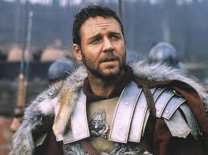

La película nos lleva al año 180. Los romanos combaten a los bárbaros junto al río Danubio. Tras la victoria romana, el anciano emperador Marco Aurelio convoca a su fiel general Máximo. En confidencia le explica la poca confianza que le inspira su hijo Cómodo, como posible sucesor. Y le desvela un plan para llevar a Roma de nuevo a la República. Pero las cosas se precipitan, el César muere y Cómodo intenta eliminar a Máximo y a su familia. El antiguo general se convierte en esclavo y, tras un tiempo, en gladiador. Con su nueva condición espera organizar su particular venganza.